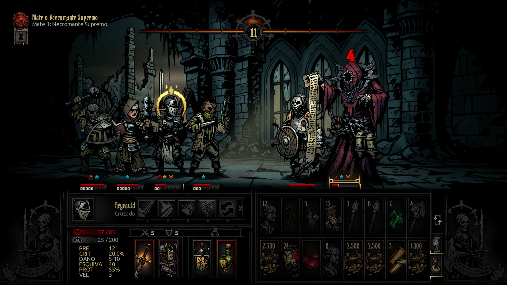
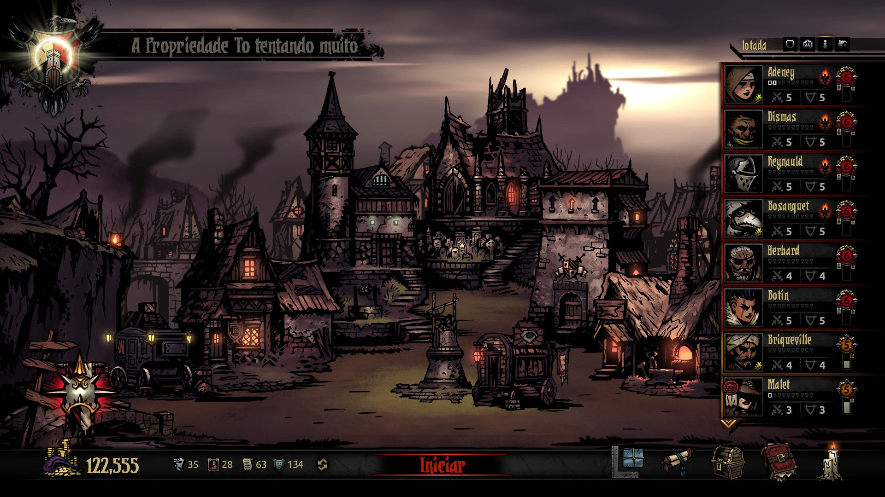
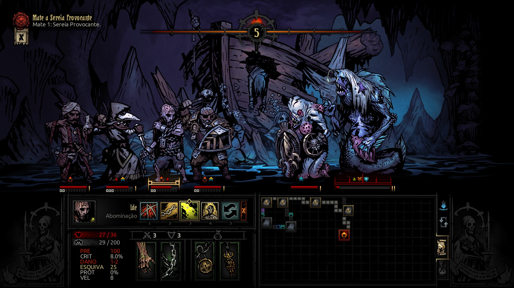
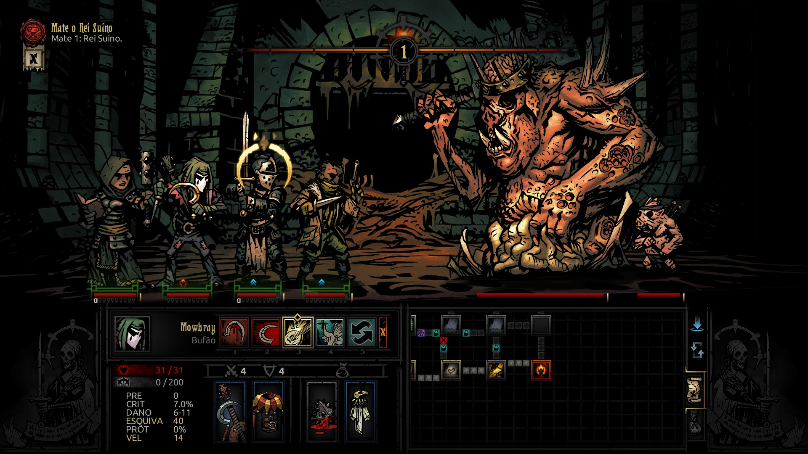

Darkest Dungeon é daqueles jogos que lentamente consomem o jogador. Seja pelo visual gótico marcante, pelo combate em turnos ou pela forte inspiração lovecraftiana, existem inúmeros caminhos que podem levar alguém até ele. O difícil mesmo é conseguir sair antes de concluir sua jornada até a última Darkest Dungeon. E depois de tantas campanhas interrompidas e retornos ao longo do tempo, chegar finalmente ao fim dessa experiência só reforça uma certeza: que jogaço.
O jogo deixa claro desde cedo que apego aqui é um luxo perigoso. Seus heróis não são protagonistas intocáveis, mas recursos. Eles vêm, vão, enlouquecem, adoecem e morrem sem cerimônia. Em uma única expedição mal planejada, toda sua equipe pode desaparecer, deixando você retornar para a aldeia sem perspectivas e se perguntando que tipo de jogo cruel é esse. Mas é justamente aí que Darkest Dungeon encontra sua força.

Porque poucas experiências conseguem transformar tensão em recompensa de maneira tão eficiente. Sobreviver a uma missão desastrosa, ver seus personagens à beira da insanidade e ainda assim derrotar o último inimigo antes do colapso total cria uma sensação genuína de alívio e conquista. Cada retorno à aldeia parece menos uma vitória gloriosa e mais a sobrevivência de algo profundamente traumático. Você não volta são. Apenas volta vivo.



Na superfície, o jogo parece apenas mais um RPG medieval em turnos com classes conhecidas e terrores cósmicos familiares. Mas tudo muda graças ao brilhante(ou seria escuro?) sistema de estresse, talvez a mecânica mais importante de toda a experiência. Aqui, não basta apenas administrar vida e dano. Controlar a sanidade do grupo se torna tão essencial quanto qualquer estratégia de combate. E quando o estresse sobe além do limite, aflições, paranoia, egoísmo e até virtudes inesperadas começam a transformar completamente o rumo das expedições. Cada classe possui suas próprias peculiaridades, incentivando o jogador a experimentar composições diferentes enquanto explora os diversos mapas do jogo. Entre acampamentos, gerenciamento da aldeia, melhorias de equipamentos e preparação de provisões, Darkest Dungeon constrói um ciclo extremamente viciante de risco e recompensa. Tudo parece constantemente à beira do desastre — e talvez esteja mesmo.
“Darkest Dungeon não quer que você se sinta poderoso. Ele quer testar até onde sua sanidade, seu planejamento e sua persistência conseguem suportar antes que tudo desmorone. E talvez o mais assustador seja perceber que, mesmo depois de perder tudo, você ainda vai querer voltar para mais uma expedição.”
Inegavelmente, é um jogo difícil. Mas esconder isso seria esconder parte essencial da sua identidade. Ainda assim, a dificuldade raramente parece injusta. O jogo pune descuido, improviso e excesso de confiança muito mais do que simplesmente azar. Preparação aqui é sobrevivência. E às vezes, a escolha mais difícil acaba sendo exatamente a melhor. No fim, Darkest Dungeon não é apenas um RPG de estratégia. É uma experiência sobre desgaste, obsessão, sobrevivência e persistência. Um jogo que constantemente arranca sua equipe de você… mas que também arranca algo do próprio jogador no processo.
✔ O QUE É BOM
- Atmosfera opressora e arte gótica impecável.
- Sistema de combate profundo e estratégico.
- Narrativa ambiental e narração icônica.
✖ O QUE NÃO É BOM
- RNG pode gerar momentos frustrantes
- Curva de dificuldade pode afastar novos jogadores
Discussão e Opiniões
Esse jogo realmente testa a nossa sanidade, mas a arte é impecável!